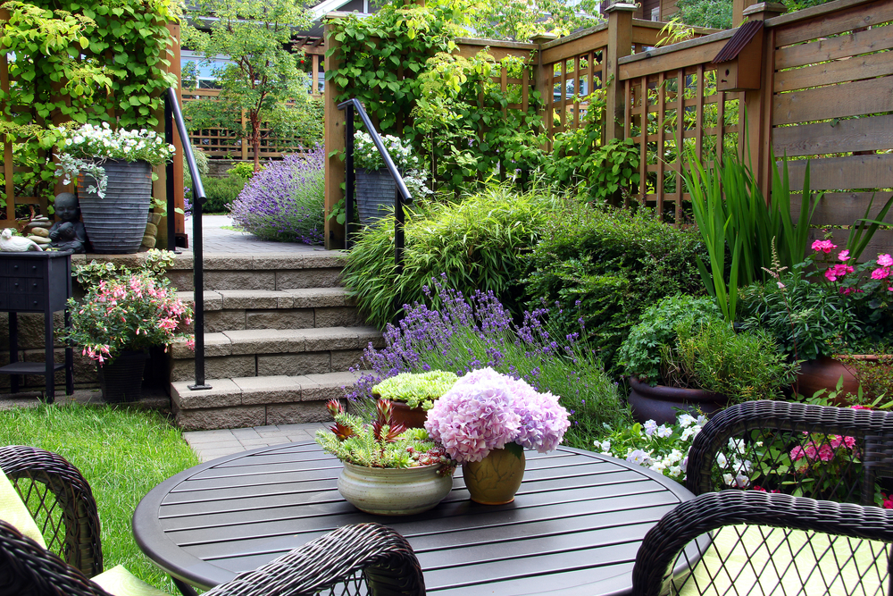
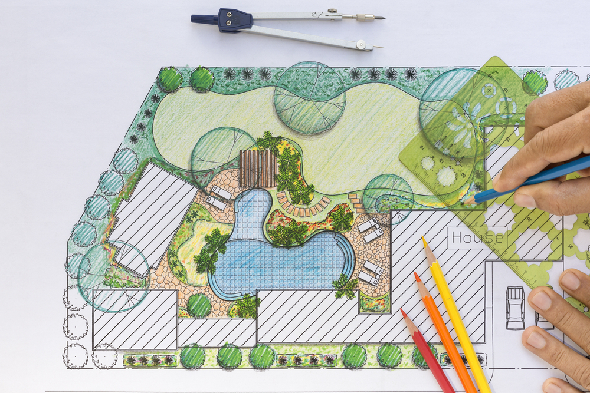
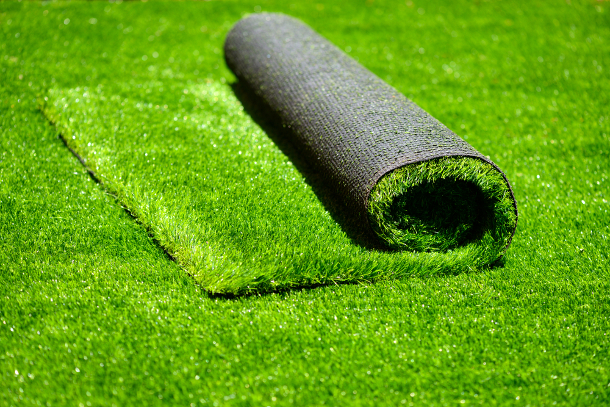
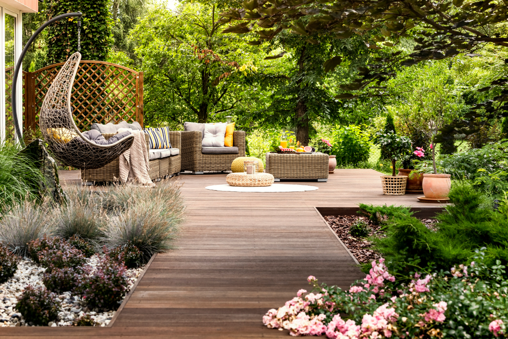
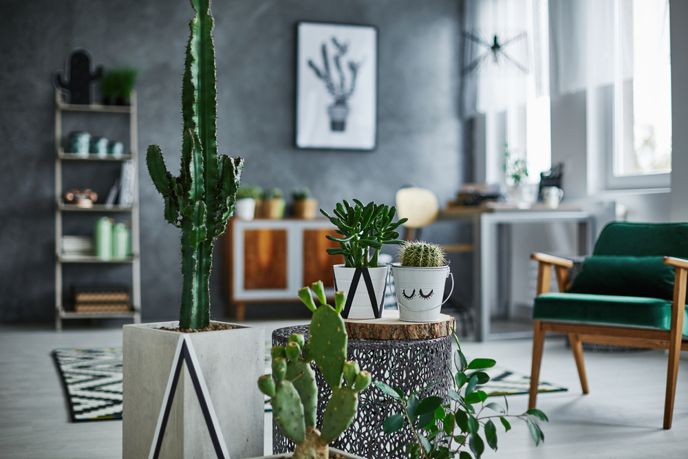
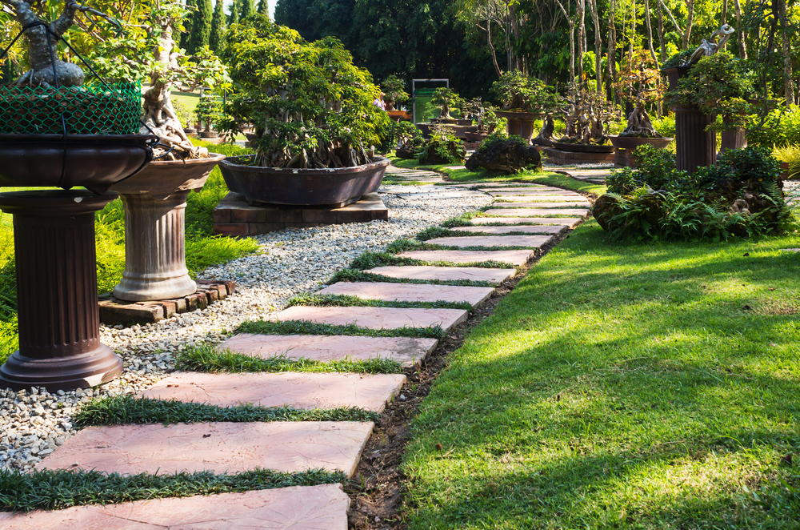
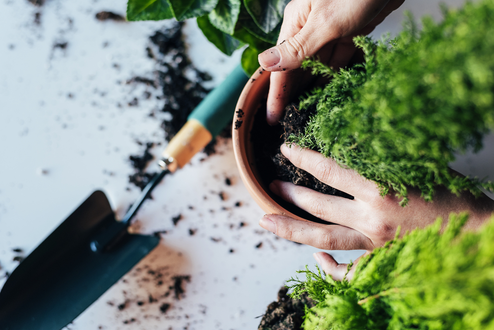

Vrt koji izgleda dobro i treće godine
Projektujemo, uređujemo i održavamo dvorišta, bašte i terase. Od prve skice na papiru do košenja koje se ne propušta.

Šta se radi u bašti, mesec po mesec
Svaki mesec ima svoje poslove. Klikni na mesec i vidi šta je tada na redu u tvom dvorištu — sve to radimo umesto tebe.
Vrt spava, a to je najbolje vreme za rez
Zimi radimo rez i popravke. Bez lišća se najbolje vidi skelet vrta, pa se tačno zna šta treba skratiti.
Zakaži nas za ovaj mesec- Orezivanje listopadnog drveća i voćaka dok miruju
- Popravka staza, rubnjaka i ograda
- Otresanje snega sa četinara da se grane ne polome
- Skica i plan za prolećnu sadnju
Poslednji miran mesec pre nego što sve krene
Pripremamo teren i opremu. Ako menjaš nešto veće u proleće, februar je mesec za dogovor.
Zakaži nas za ovaj mesec- Orezivanje ruža i ukrasnog žbunja pred kretanje
- Prihrana zemlje i unošenje komposta
- Servis sistema za zalivanje pre sezone
- Priprema sadnica u zaštićenom prostoru
Trava kreće i sezona počinje
Kreću redovni obilasci. Travnjak dobija prvu negu, a nove sadnice odlaze u zemlju.
Zakaži nas za ovaj mesec- Prvo košenje i prozračivanje travnjaka
- Prolećna prihrana trave
- Sadnja žbunja, perena i četinara
- Puštanje sistema za zalivanje
Mesec sadnje
Sadimo i sejemo. Sad se vidi da li je plan napravljen u zimu bio dobar.
Zakaži nas za ovaj mesec- Dosejavanje proređenih delova travnjaka
- Sadnja sezonskog cveća i trajnica
- Suzbijanje korova pre nego što se odomaći
- Košenje na svakih desetak dana
Sve raste brže nego što stižeš
Košenje ulazi u nedeljni ritam. Živa ograda dobija prvi oblik za tu godinu.
Zakaži nas za ovaj mesec- Košenje jednom nedeljno
- Prvo oblikovanje žive ograde
- Malčiranje leja da zadrže vlagu
- Zaštita od prvih štetočina
Počinje borba sa suvim danima
Zalivanje preuzima glavnu ulogu. Podešavamo sistem tako da voda ide kad ima smisla, a ne kad je najtoplije.
Zakaži nas za ovaj mesec- Zalivanje rano ujutru, ređe ali obilno
- Orezivanje žive ograde i ukrasnog šiblja
- Letnja prihrana travnjaka
- Uklanjanje precvetalih cvetova
Vrućina odlučuje kako će bašta izgledati u avgustu
Držimo baštu kroz vrućinu. Manje rezanja, više vode i senke.
Zakaži nas za ovaj mesec- Zalivanje je najvažniji posao u mesecu
- Košenje na većoj visini da trava pravi senku sebi
- Senka i zaštita za biljke u saksijama
- Provera kapaljki i prskalica
Vrt se odmara, ti pripremaš jesen
Održavamo i pripremamo teren. Avgust je pravo vreme da se dogovori jesenji posao.
Zakaži nas za ovaj mesec- Nastavak redovnog zalivanja
- Uklanjanje suvih delova i precvetalog
- Priprema terena za jesenju sadnju
- Poslednja letnja prihrana
Najbolji mesec u godini za nov travnjak
Radimo nove travnjake. Trava posejana u septembru dočeka proleće već ukorenjena.
Zakaži nas za ovaj mesec- Postavljanje tepih trave ili setva novog travnjaka
- Jesenja prihrana sa manje azota
- Sadnja drveća i žbunja dok je zemlja topla
- Prozračivanje i peskiranje travnjaka
Zemlja je još topla, vazduh već hladan
Sadimo i čistimo. Drvo posađeno u oktobru kreće u proleće kao da je oduvek tu.
Zakaži nas za ovaj mesec- Sadnja lukovica za prolećno cvetanje
- Grabljanje lišća sa travnjaka
- Poslednje košenje u sezoni
- Sadnja drveća i živih ograda
Bašta se sprema za zimu
Zatvaramo sezonu. Sistem za zalivanje praznimo pre prvog jačeg mraza.
Zakaži nas za ovaj mesec- Pražnjenje sistema za zalivanje
- Zaštita osetljivih biljaka i saksija
- Zimsko orezivanje počinje
- Čišćenje leja i kompostiranje lišća
Miran mesec, dobar za plan
Obilazimo i planiramo. Decembar je mesec za skicu, ne za lopatu.
Zakaži nas za ovaj mesec- Zaštita saksija na terasi od mraza
- Provera oslonaca i vezova na mladim stablima
- Procena šta menjati sledeće sezone
- Skica i ponuda za narednu godinu
Tri stuba, devetnaest poslova
Radimo ceo krug: nacrtamo, izvedemo i onda održavamo. Otvori stub da vidiš sve što ulazi u njega.
Prvo se crta, pa se kopa. Izlazimo na teren, merimo prostor i pravimo plan sa rasporedom biljaka, staza, osvetljenja i zalivanja. Dobijaš koncept u kom piše koja biljka ide gde, spreman da se po njemu radi.
- Pejzažna arhitektura i hortikultura
- Uređenje dvorišta
- Uređenje terase
- Biodekoracija enterijera
- Ozelenjavanje
- Projekat sistema za zalivanje

Kad je plan gotov, dolazimo sa ekipom i alatom. Od krčenja zaraslog terena do poslednje sadnice i puštene prskalice, bez prepuštanja posla podizvođačima koje nismo sami proverili.
- Krčenje i priprema terena
- Uređenje bašte i vrta
- Sadnja biljaka
- Tepih trava
- Sejani travnjak i zasnivanje travnjaka
- Izgradnja fontana i jezera

Bašta traži pažnju i posle radova. Dolazimo po rasporedu koji ti odgovara, nedeljno ili sezonski, i vodimo je kroz celu godinu. Kalendar iznad pokazuje šta to znači po mesecima.
- Održavanje dvorišta
- Košenje trave
- Održavanje travnjaka
- Zalivanje
- Suzbijanje korova
- Orezivanje
- Prihrana biljaka

Dvorišta, terase i enterijeri
Isto pažljivo radimo terasu od nekoliko kvadrata i dvorište od nekoliko ari. Evo kako to izgleda.




Četiri koraka, bez preskakanja
Zapušteno dvorište ne rešava se jednim popodnevom sa trimerom. Rešava se planom, pa radom, pa redovnom negom.
-
01
Obilazak
Dolazimo na tvoju adresu, gledamo teren, osunčanost i zemlju, i slušamo kako zamišljaš prostor.
-
02
Plan
Crtamo raspored biljaka, staza, osvetljenja i zalivanja. Dobijaš koncept sa vrstama biljaka i cenom.
-
03
Radovi
Ekipa krči, priprema teren, sadi i postavlja travnjak. Ti pratiš napredak, mi rešavamo šta iskrsne.
-
04
Nega
Vraćamo se po dogovoru i održavamo ono što smo napravili. Bašta ne ostaje sama posle radova.

Vrt vodimo od skice do treće sezone
Garden Design Beograd radi kompletno pejzažno-arhitektonsko uređenje. U timu su ljudi različitih struka, pa jedan posao ne prelazi iz ruke u ruku između firmi.
Radimo sa porodičnim kućama, stambenim zgradama i poslovnim objektima u Beogradu. Uređenje okućnice mora da bude promišljeno i sveobuhvatno, zato svaki posao počinje konceptom sa vrstama biljaka, a ne nagađanjem na terenu.
Plan pre lopate
Svaki posao počinje obilaskom i konceptom prostora.
Jedna ekipa
Projektovanje, radove i negu rade isti ljudi.
Ostajemo posle radova
Redovna nega po rasporedu koji tebi odgovara.
Pozovi i dogovori obilazak
Reci nam koliki je prostor i šta ti smeta. Izlazimo, pogledamo i predlažemo rešenje sa cenom, bez obaveze.
Telefon
Gde radimo
Beograd i okolina. Obilazak terena dogovaramo telefonom.